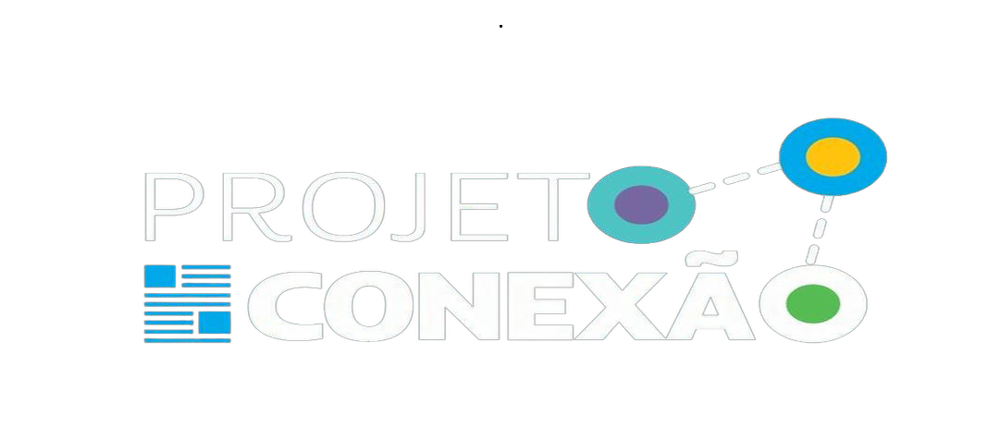
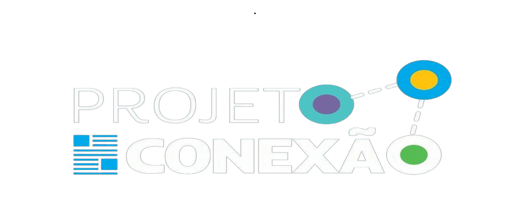

Estudantes do segundo e terceiro ano participam de projeto de extensão sobre acesso à justiça
Na manhã de segunda-feira (9) e terça-feira (10), alunos do segundo e terceiro ano do Ensino Médio da Escola Social Marista Ir. Acácio participaram de um projeto de extensão com estudantes do curso de Direito da PUC. ...
Continuar lendo